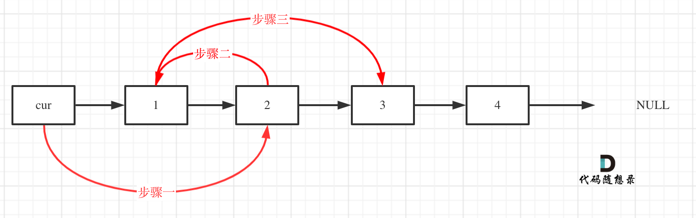
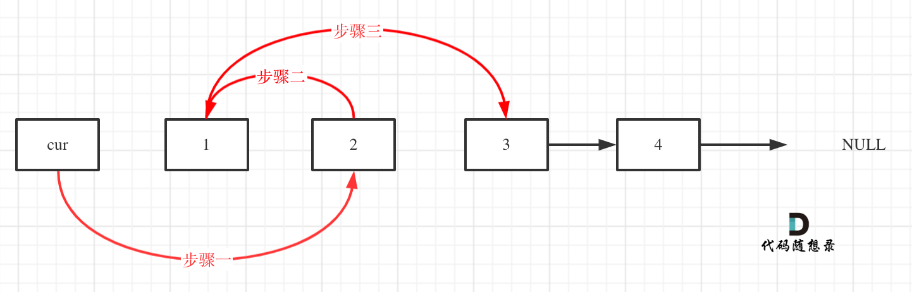

24. 两两交换链表中的节点
题目
给你一个链表，两两交换其中相邻的节点，并返回交换后链表的头节点。你必须在不修改节点内部的值的情况下完成本题（即，只能进行节点交换）。
示例
示例 1:

输入：head = [1,2,3,4]
输出：[2,1,4,3]
示例 2:
输入：head = []
输出：[]
示例 3:
输入：head = [1]
输出：[1]
提示
- 链表中节点的数目在范围
[0, 100]内 - 0 <=
Node.val<= 100
解题思路
思路


首先，我们定义一个虚拟节点vitualHead, 并且该虚拟节点指向真正的头节点, 并且定义当前节点cur指向虚拟节点。那么我们需要替换1和2这两个节点本身的话, 需要有以下三个步骤:
temp=cur.next // 先备份1这个节点, 下面步骤会指向变更, 先要备份temp1=cur.next.next.next //先备份3这个节点, 下面步骤会指向变更, 先要备份
cur.next = cur.next.next// 步骤一: 即将cur指向节点2cur.next.next = temp// 步骤二: 即将节点2指向节点1(因为步骤1已经将cur.next指向变更了，所以这也是为啥要先备份节点1)temp.next = temp1// 步骤三: 即将节点1指向节点3(因为步骤2已经将cur.next.next指向变更了，所以这也是为啥要先备份节点3)cur = cur.next.next// cur本身向前移动两位, 即cur操作完成之后，cur指向了1, 然后反复重复这个过程。
另外一个很关键的点就是，我们需要判断什么时候终止, 那么可以考虑节点数为奇数和偶数两种情况:
cur.next==nil即代表为偶数(包括0)的情况，已经遍历完成cur.next.next==nil, 即代表为奇数(包括1)的情况下，这个时候，最后一个单节点也不需要变换，也遍历完成
所以，我们整体可以判断为for(cur.next!=nil && cur.next.next!=nil)
实现
type ListNode struct {
Val int
Next *ListNode
}
func swapPairs(head *ListNode) *ListNode {
var vitualHead = &ListNode{} //定义一个虚拟节点
vitualHead.Next = head
cur_node := vitualHead
for cur_node.Next != nil && cur_node.Next.Next != nil { //终止条件很关键，以奇数个和偶数个作为判断条件, 且cur_node.Next需要写在第一位, 防止cur_node.Next.Next可能越界
temp := cur_node.Next
temp1 := cur_node.Next.Next.Next
cur_node.Next = cur_node.Next.Next // 第一步
cur_node.Next.Next = temp // 第二步
temp.Next = temp1 // 第三步
cur_node = cur_node.Next.Next // cur_node向前移动两位
}
return vitualHead.Next
}